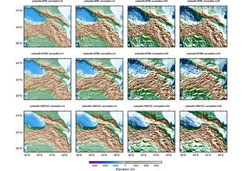
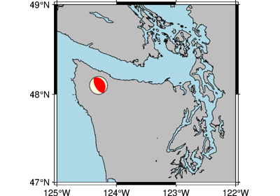
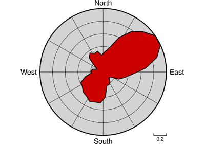
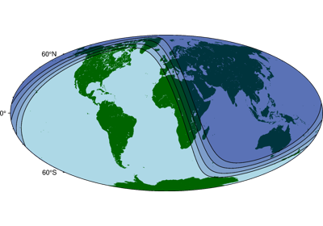

Gallery
This gallery contains examples of what PyGMT can do. Click on any example to see the code used to generate it.
Maps and map elements


Lines and vectors


GeoPandas: Plotting lines with LineString or MultiLineString geometry
GeoPandas: Plotting lines with LineString or MultiLineString geometry


Symbols and markers


GeoPandas: Plotting points with Point or MultiPoint geometry
GeoPandas: Plotting points with Point or MultiPoint geometry


Images, contours, and fields


Calculating grid gradient with custom azimuth and normalization parameters
Calculating grid gradient with custom azimuth and normalization parameters


3-D Plots


Seismology and geodesy

Focal mechanisms
Base maps


Histograms



Rose diagram

Plot embellishments


Day-night terminator and twilights
Day-night terminator and twilights
GMT logo